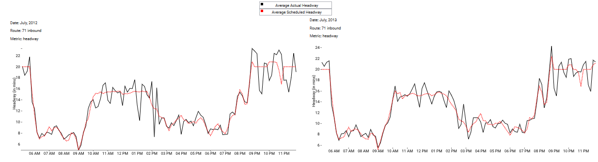
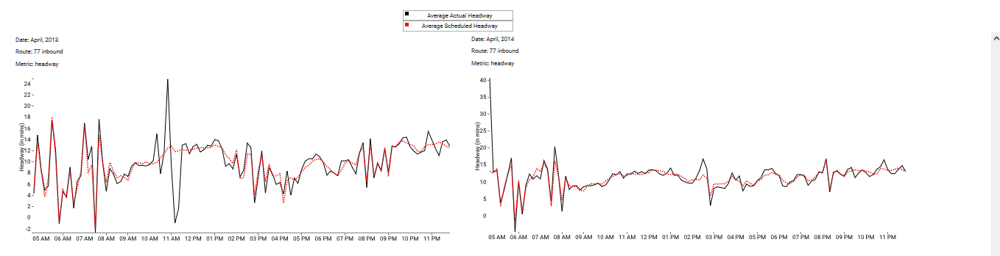
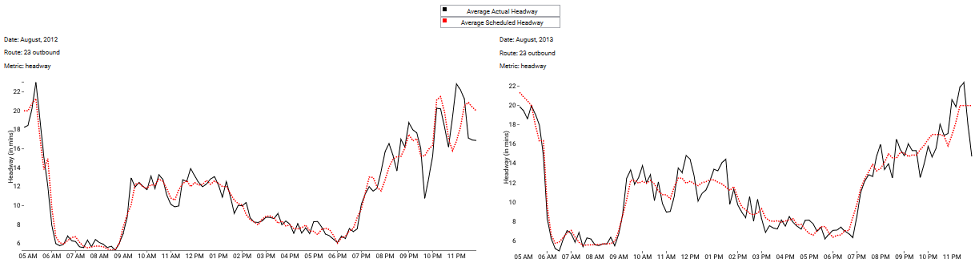
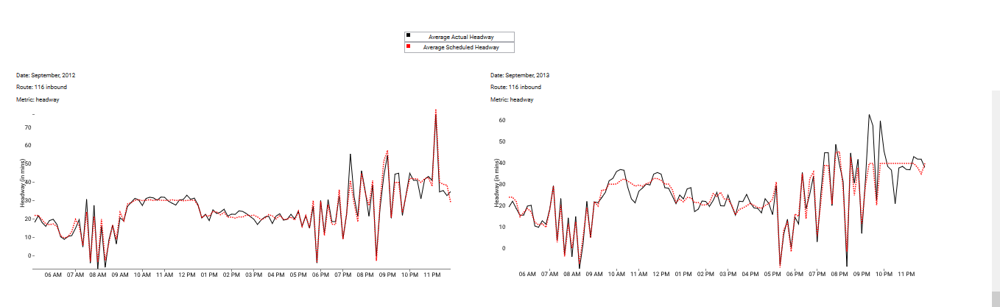

MBTA Bus Performance
An interactive exploration of Boston's bus system
Huy Le, Yue Zhang, Hua Li, Arlyn Rodriguez, Reva Scharf, Xin Peng - May 2015

Boston's Massachusetts Bay Transit Authority (MBTA) operates a busy bus system. The MBTA provided data for us to generate a comparison of on-time bus performance before and after the implementation of significant MBTA service changes that went into effect over the course of spring and summer 2013 (specific dates, by route, are available).
We attempt to present a few visualization tools to help MBTA personnel and people in Boston help better understand the buses and how the change in routes has affected the performance of those buses.
The MBTA implemented 15 key bus route changes during the spring and summer of 2013. The big question is whether those changes benefited or hurt the on-time bus performance. To better understand how the Key Bus Route Program affected the buses, we produced visualizations on four key metrics: run time, actual vs scheduled times, headway, and wait times.

The following graph provides a comparison of the percentages of buses that were late for each key bus routes. A bus is considered late if its headway is greater than 150% of its scheduled headway. What percentages of buses were late for that key bus route? The graph compares before (pre) and after (post) the Key Bus Route Program.
The following tool provides a form for analyzing data on the key bus metrics of choice. Submit the form and graphs will populate, providing a comparison between corresponding months in separate years for that metric.
Run time: time it takes for a bus to finish a one-way portion of a trip.
Actual vs Scheduled: actual time that the bus takes to reach its destination compared to the scheduled time planned for the bus to reach that destination.
Headway: time interval between different buses on a route.
Wait time: time waited for a bus to reach its stop.
The following map provides a check-box tool to see where exactly are the 15 key bus routes. Check a box, and markers will populate that bus route.
Overall, as seen on the late percentage graph, headway improved for six of the key bus routes: 1, 32, 57, 71, 73, and 77. Headway worsened for five of the routes: 15, 22, 23, 28, and 116. For the remaining four routes, there was little to no change.
Across all routes, the headway changes between the pre- and post- data occurred in the midday (from 10am to 2pm). Here we observed the biggest spikes in the headway. For the improved routes, this means that the headway was smoothed out here. For the routes whose headways became worse, this is where the spikes occurred. Furthermore, the routes who experience improvements in headway tend to see these improvements in the inbound lines. Conversely, the routes whose headways got worse tend to see these negative changes in the outbound lines.
For Runtime, no big changes were detected. The runtime has converged to become more similar across the routes – they are distributed more evenly. For instance, all of the runtimes have come closer to being between 40 and 60 minutes, whereas, before the program, there was more variability (i.e. some buses had 20-minute runtime, others had 40-minute runtimes, and others 60-minute runtimes. In winter months, runtime gets worse for all routes.
The difference between scheduled and arrival time generally worsened, especially in the afternoon and rush hours. Specifically, this 73 bus experiences the worse change in this metric after the Key Bus Route Program.
The 71 and 77 bus saw great improvements in headway.
For the 77 bus, the headway improved the most in July (inbound), November (inbound), September (outbound), October (outbound), and November (outbound). Let’s look more closely at the headway for July (inbound) pre- and post- KBRP:
Here we see that the headway aligns more closely with the scheduled headway line in 2013 than in 2012. Although there are spikes between 10am and 3pm, they are less sharp than those that occurred in 2012 within that same time frame.
For the 77 bus, the headway improved the most in February (inbound), April (inbound), and November (inbound and outbound). Let’s look more closely at the headway for April (inbound) pre- and post- KBRP:
Here again, just looking at the graphs, you notice that the lines are much smoother in 2014 than in 2013. There are few spikes in the graphs and, the ones that are there, align with the scheduled headway line. In the 2013 graph, the headway spikes to 26 minutes just before 11am, then spikes down to zero. In the 2014 graph, however, the headway does go up to 22 minutes, but that is in alignment with the scheduled headway (so it was supposed to happen). On average, the 77 buses stayed pretty close to their scheduled headway throughout the day.
For the 23 bus, the headway worsened in August (outbound). Let’s look at this more closely:
In 2013, the headway deviates from the scheduled headway much more often than it does in 2012. This is particularly between 9am and 2pm, where we see sharp spikes in the 2013 graph.
For the 116 bus, the headway worsened in September (inbound and outbound), October (outbound), November (outbound), and December (outbound). Let’s look more closely at the headway for September (inbound):
In 2013, even though there are quite a number of spikes, they align well with the scheduled headway line. In 2014, on the other hand, there are huge spikes between 9pm and 10:30pm, going 20 minutes above scheduled headway.
Since most of the headway spikes occurred during midday hours (10am to 2pm), more has to be done to make sure that there are buses that arrive on time during these hours. More attention needs to be given to the lines whose headways got worse: 15, 22, 23, 28, and 116. Since the routes whose headways got worse saw these negative changes in the outbound lines, more attention should be given to outbound service. Thank you for reading our analysis. Feel free to use our tool below to explore the different metrics!